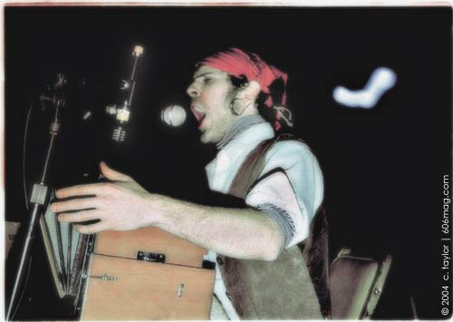

 |
In mid-February, I went to see a show at the Empty Bottle . Of a pirate. I didn't really know what to expect, however, I got exactly that: a pirate. The William Young consists of one man, Alex Barnett, on the stage dressed in a white shirt, an eye patch and a bandana. “I've been a pirate since around July last year,” Barnett said as I sat down with him after the show. “The William Young is a band that goes back even further than that, six months or so. I like pirate music.” Barnett opened up his harmonium – an instrument similar to an accordion , but contained in a wooden, piano-like box – on stage and started his show. He commanded the space with a somber yet playful presence, and a raspy Tom Waits-esque voice. “I'm really into developing a concept and making music around that,” he said. “It was a rough concept, but I developed it into a pirate.” Barnett explained the allure of a pirate's life , ranging from the freedom of the lifestyle to the culture to ideas of the constructs of society. “There's a modern pirate who's going about the sea, taking over boats and really stealing cargo like pirates used to do, but it's also the idea of not buying into the set way of getting things,” he continues. “That is more like being a pirate, not just musically. I don't want to work an office job, all day the rest of my life, or buy into the American dream as its been told to me. I believe in something else.” The audience arched around the stage, creating an elusive intimacy with the world of his tragic sea shanties, or sailor songs, as the landlubbers call them. When a song beckoned response, the audience was quick to participate. A makeshift community was created. “If anybody is going to write songs, it's going to be partly about what they believe, no matter what they are writing songs about,” he said. “Their beliefs are going to be an influence in it. It's really great to create your own universe. I really do like stories of pirates and like the whole culture that surrounds it.” The audience sat around drinking their booze, clinging to their booty. The ambience created by The William Young suspended disbelief and enticed those listening to surrender to the volatile and audacious world of the pirate. Warm golden beer guzzled down throats as some members of the audience swayed and dreamed of the sea. At the end of the set, my glass of beer was finished, and the transition of mood was abrupt. I wanted to bask in the sea shanty, and possibly steal beer from someone standing around me. I was feeling brazen . The pirate's life was the life for me. Aarrr. Pick up The William Young's album on cassette at Quimby's bookstore. |